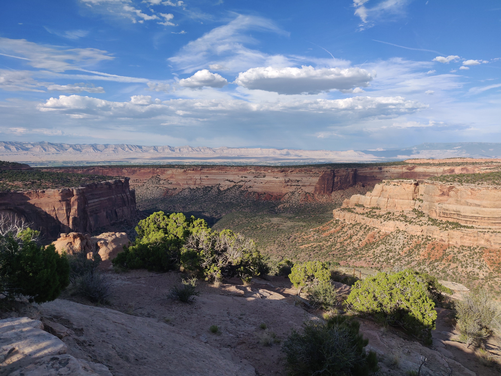
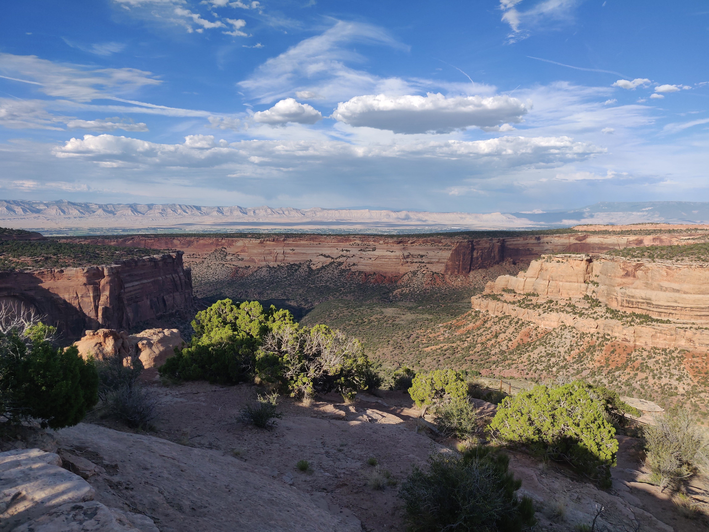

Canyons and Mountains - Exploring Colorado and Utah
Rocky Mountain National Park - Estes Park, CO.
The Images below were shot in Rocky Mountain National Park, which is about 75 miles northwest of Denver.
This is a view of the iconic Emrald Lake.
Here are more views from the Park.

Here are pictures from the park's Alpine Visitor's Center. At this altitude, the terrain resembles the arctic tundra.


Independence Pass, Colorado
The next set of images are from Independence Pass, a famous section of the Rockies, not far from the famous Aspen. It is important to note that independence pass is closed from October-May. Independence Pass.

Colorado National Monument
The images below are from Colorado National Monument. This landmark, located in Fruita, CO., is about 30 minutes west of Grand Junction along state route 340. The Colorado National Monument represents some of the greatest examples of western desert scenery that I have seen in all my time travelling the United States.
 

A Lonley Utah Road
These photos were taken on State Highway 313 close to Moab, Utah.